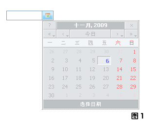

时间组合框，可以调用JS时间选择器的组合框！效果图如下：

1. 使用方法 - HTML代码
<div class="timecbox">
<input type="text" class="textbox" style="width:70px;" name="..."/><input type="button"
onmouseover="deal_combobox_mouseover(this)" onclick="deal_timecbox_show(this.previousSibling)" class="choice"/>
</div>
代码说明：
1. 为了兼容浏览器，两个 <input> 标签务必紧挨着写在一起！
2. onmouseover="deal_combobox_mouseover(this)" 为按钮添加点击时样式变化
3. deal_timecbox_show(this.previousSibling) 显示JS日历控件并自动绑定指定的输入文本框
2. 使用方法 - PHP生成
// 待开发